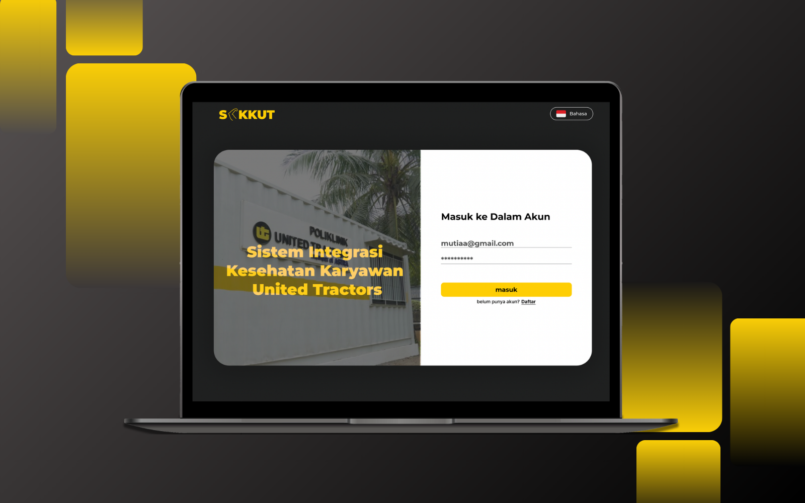

Case study • Web platform • Innovactive Competition
SIKKUT
A platform designed for United Tractors to unify their employee wellness programs into one seamless digital experience. It simplifies access to health accounts across all divisions, supporting the company's vision for healthier, happier employees. Developed for the Innovactive Competition, where it won 3rd place out of 100+ groups for its impactful design and usability.
← Back to works
01
Overview
02
Background
United Tractors offers a variety of programs to support employee well-being, from Poli Klinik to the Selaras program. While these initiatives promote a healthier, happier workforce, they are currently managed separately — making it difficult for employees to easily access their health services.
03
Understanding the problem
Before beginning any visual mockups, the project began by clearly defining the scope and the client's mandatory visual language.
Establish a unified visual system for the United Tractor employee portal. My core mandate was to integrate existing content and functionality from disparate health care programs into one highly organized, visually consistent interface — enhancing the overall user experience and professionalism of the platform.
My work was strictly governed by pre-established branding guidelines, requiring the design to be built primarily around the black and yellow corporate palette.
Each health program used different visuals and components, creating inconsistency and confusion for users navigating between sections.
Without a shared UI framework, developers rebuilt common elements repeatedly, slowing progress and reducing scalability.
04
Design process
Tone of voice — the personality of the SIKKUT interface, guiding all decisions on color usage, typography, spacing, and micro-interactions to ensure a consistent, professional, and trustworthy experience for employees.
Color palette — since SIKKUT is developed under United Tractors, the design reflects the company's identity.
Reserved for highly interactive elements like primary buttons (CTAs).
Used for all body text, headings, icons, and structural elements like dark headers/footers, providing the necessary contrast.
Used for reducing cognitive load and improving readability.
Typeface — a commercially licensed font, Montserrat, is used throughout the design.
Logo — SIKKUT (pronounced see-koot) is the proprietary United Tractors Employee Health Integration System, an acronym for "Sistem Integrasi Kesehatan Karyawan United Tractor." The letter "I" is replaced with an elbow symbol — a phonetic nod to the Indonesian word sikut (elbow) — the joint as a point of seamless connection, integration, and strength.

05
Design decisions
Every screen in SIKKUT was designed with purpose. The following highlights walk through moments where design choices created impact on user experience.
No "X" needed — most users instinctively tap outside modals to close them (observed in 8/10 test users). This keeps the flow simple and intuitive.


The checkmark + 💪 adds a sense of achievement — motion and bold visuals make every action feel rewarding.
Used human icons instead of numbers to show capacity — users identified club availability 1.6× faster and found it more intuitive at a glance.

With one place, every service — the main idea of the design: all health and wellness programs are displayed on the home screen, cutting navigation time in half.

Half-and-half layout keeps users focused — they can choose a facility and fill the form without switching screens, making booking faster and smoother.

06
Results & takeaways
The redesign centralized eight key services — from medical booking to hobby clubs — under one clear navigation system. Internal testing showed a 40% faster navigation time and improved recognition across programs through consistent visuals and typography.
- Unified experience: combined multiple wellness programs into one cohesive platform.
- Improved usability: simplified flow made access easier for all employee levels.
- Accessible by design: enhanced contrast and readability while preserving brand identity.
07
Reflection & future improvements
Designing SIKKUT taught me how to balance corporate identity with usability, transforming a formal system into something approachable and clear. Collaborating with real stakeholders deepened my understanding of how design impacts both business goals and daily employee experience.
If I were to revisit the project, I'd refine the prototype flow and component consistency, ensuring smoother interactions and clearer feedback states. I'd also expand the system with:
- Mobile accessibility for on-the-go wellness access.
- Personalized dashboards tailored to each employee's habits.
- Integrated analytics to help HR track engagement and program impact.
This project reminded me that good design isn't just about visuals — it's about iteration, alignment, and clarity at every scale.